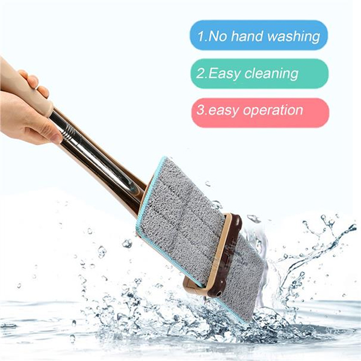

60%
скидка100% гарантия качества
Быстрая доставка
Оплата при получении
Обычная цена:
399 MDL
Вы экономите: 60%
199 MDL
НАВЕДИТЕ ЧИСТОТУ В ДОМЕ В ОДНО МГНОВЕНИЕ С
ШВАБРОЙ TITAN TWIST MOP
Не любите мыть полы, всегда оттягиваете этот момент, собираетесь с духом, чтоб встать на четвереньки и начать отдраивать пол? Или постоянно выкручиваете и полоскаете насадку для швабры, портя при этом маникюр? Все это больше не нужно будет делать, если у Вас в доме появится практичная швабра Hand-Free Flat Mop с самоотжимом. Она поможет быстро и чисто вымыть пол и даже плинтуса, при этом Вам не придется даже намочить руки!
Насадка швабры сделана из микрофибры. Это долговечный материал, который отличается повышенной впитываемостью, именно поэтому такой шваброй можно мыть как линолеум, плитку, так и ламинат, паркет. Микрофибра идеально и быстро очищает любые поверхности даже без дополнительных моющих средств, поэтому такую вещь особенно полезно иметь аллергикам. Также стоит отметить, что этот материал отличается тем, что в нем практически не заводятся бактерии. Насадка легко крепится и плотно держится благодаря липучкам, стирается и очень быстро сохнет.
учка уникальной швабры способна менять угол наклона на 360 градусов, поэтому Вы без труда сможете добраться во все труднодоступные места: под диван, шкаф, комод, в каждый угол. Такая помощница легко вымоет даже плинтусы. При этом ручка очень легкая, поэтому Вам не составит труда сделать с ней даже генеральную уборку.
Кроме того, удобная швабра имеет специальную насадку с вертикальным отжимом. На ручке расположен рычаг, с помощью которого Вы легко удалите лишнюю воду и остатки мусора с насадки, и при этом Вам не придется нагибаться и мочить руки.
Платформа с насадкой имеет длину 35 см, а это значит, что Вам нужно потратить меньше усилий, чтобы вымыть большую площадь, будь то пол или стены из плитки в ванной. При этом универсальная компактно складывается, пластина отжима удерживает ее платформу с насадкой в вертикальном положении.
Характеристики:
- ☑ Страна-производитель: Китай
- ☑ Тип: Универсальная швабра с отжимом
- ☑ Материал платформы: Высокопрочный пластик
- ☑ Материал телескопической ручки: Нержавеющий металл
- ☑ Материал насадки: Микрофибра
- ☑ Размер платформы (Д/Ш): 35х12,5 см
- ☑ Длина швабры: 124 см
- ☑ Резиновая насадка: Есть
- ☑ Размер коробки (Д/Ш/Г): 54х14х7 см
Комплектация:
- ☑ Платформа с основанием: 1
- ☑ Телескопические трубки: 2 шт
- ☑ Насадки из микрофибры: 1 шт
Фотографии
Преимущества
Можно мыть не только полы, но и стены, плинтусы, окна и потолки. Подходит для напольных покрытий любого типа.
Насадка из микрофибры долговечна и хорошо впитывает лишнюю влагу, не оставляет разводы. Швабра имеет отжим, поэтому Вам не придется мочить руки.

Вращающаяся на 360 градусов ручка помогает вымыть все самые труднодоступные места. Компактно складывается для хранения.
Отзывы наших клиентов
Как заказать?
Заявка
Оставьте заявку на нашем сайте,
заполнив форму заказа ниже.
Отправка
Доставляем заказ в течение 1-3 дней

Получение
Оплачиваете при получении
Швабра Hand-Free Flat Mop с самоотжимом.
60%
скидка100% гарантия качества
Быстрая доставка
Оплата при получении
Обычная цена:
399 MDL
Вы экономите: 60%
199 MDL
Drop Store SRL
Str. Uzinelor 98, MD-2023, or. Chisinau, Republica Moldova
Режим работы: Пн - Вс: 08:00 - 21:00
Правила возврата и обмена товара Политика конфиденциальности